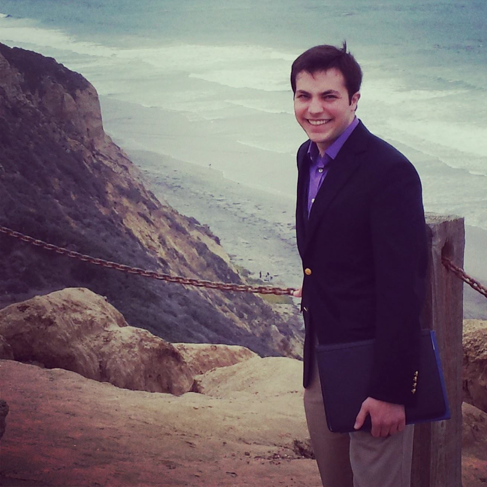

BRAD THEILMAN

Computational Neuroscience Ph.D. Student @ UC San Diego
Research Interests
- Conserved computational and information-representation motifs in the brain
- Auditory sensory processing
- Approaches to handling high-dimensional non-linear data
- Applications of neuroscience to engineering
- Applications of geometry to neuroscience
Contact Information
Biographical Sketch
2014 - Present: Ph.D., Neurosciences (Computational Neuroscience Specialization), UC San Diego
2009 - 2014: B.S., Biomedical Engineering (Mathematics Second Major), University of Cincinnati
Other Interests
- Amateur Radio
- Gravity & Differential Geometry
- Space Exploration
- Music
- Science Fiction
- Linux
- Extreme Environments
Fun with Relativistic Ray Tracing